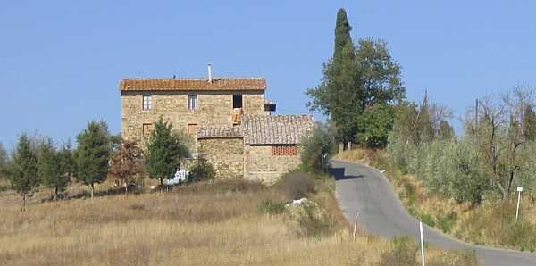

EREDE (Le Redi)
L’antica abitudine di definire le proprietà in attesa di successione con il termine di “Herede” seguito dal nome di famiglia, rimase col tempo attribuito al podere che sorgeva in cima ad un poggetto, sulla via per Vagliagli, in prossimità di Petroio. Forse non aveva un nome proprio e la sua origine potrebbe essere collocata nel Quattro/Cinquecento.
Nel 1498 la chiesa di Petroio possiede un pezzo di terra nel luogo definito
"Herede, soda e lavorativa". La costruzione poderale dominava la vallata dello Staggia, con i suoi campi che segnavano il confine col Casalino da una parte mentre al di là della strada comunale comprendevano una bella striscia di terreno che andava dalla strada della Catena a Petroio. Definito nel 1581 come podere
"Lerede" del sig. Credi di Petroio, è associato poi per quasi un secolo alla proprietà di questa fattoria; è chiamato anche Le Rede o Le Redi o semplicemente Rede. Nel 1653 spunta il nome
“Erede Colombini”, che indica i nuovi proprietari. Nel 1669 il podere, definito fino allora pigione, cambia ancora titolarità perché viene acquistato da don Montorselli, rettore della Canonica a Bozzone, che trent’anni dopo lo lascia in eredità alla Chiesa di Quercegrossa. Era attiva nei campi del podere, da tempo sconosciuto, una fornace e il defunto rettore l’aveva affittata a certi Luigi, che ben presto vennero in lite col parroco di Quercegrossa. (vedi Storia Religiosa). Sono note in quegli anni le migliorie apportate dal parroco don Lucchi che nel 1707 costruisce la capanna e rimette a nuovo il forno. Per oltre un secolo rimane bene della parrocchia, poi, nel 1813 don Bianciardi lo cede ai padroni di Petroio, i signori Fortini, che così lo riuniscono nuovamente alla fattoria.
La presenza della fornace fa sì che il podere sia detto anche "La Fornace" come si riscontra nella pianta catastale del 1825 quando risulta al nuovo proprietario Ferdinando Manetti. Dopo il Manetti, che vende nel 1834, la successione dei numerosi proprietari segue quella di Petroio fino ai Pallini, con la sola differenza che Petroio viene acquistato da Cesare Pallini il 3 febbraio 1896 dagli Andreucci mentre Le Redi le acquista, sempre da Ferdinando Andreucci, il 21 giugno 1900. Da quel giorno è parte integrante di Petroio. Ai primi del Novecento il fabbricato è raddoppiato per accogliere il secondo contadino entrato nel 1910, e oggi si presenta con due edifici distaccati. Al nuovo poderino furono destinate poche terre dalla parte dello Staggia, circa tre ettari, bastanti per una piccola famiglia come erano i Ferrozzi. Anche la stalla era limitata a un solo vitello, allevato per la vendita. Una scrofa e una maiale ingrassato per l’ammazzatura.

Per molti decenni, e a memoria d’uomo, alle Redi hanno abitato soltanto le famiglie Manganelli e Ferrozzi con una continuità che arriva al 1959, per gli ultimi che cedettero l’abitazione al salariato Sestilio Nucci. Parlando degli antichi coloni si trova che nel 1592 Mattio di Marco raccoglie di sua parte 5 ql. di grano. Agli inizi del Seicento vi abita Donato Chiavistrelli e poi Michi, Fanetti, Gallozzoli, Quaranti, Pieri, Gabbrielli, Tracchi e così via fino al chiudersi dell’Ottocento con Sancasciani, Bernini, Franci Pianigiani, Riccucci e ultimi i detti Ferrozzi e Manganelli che vi passeranno insieme il Novecento.
Il podere Erede quando era ancora abitato dai Manganelli